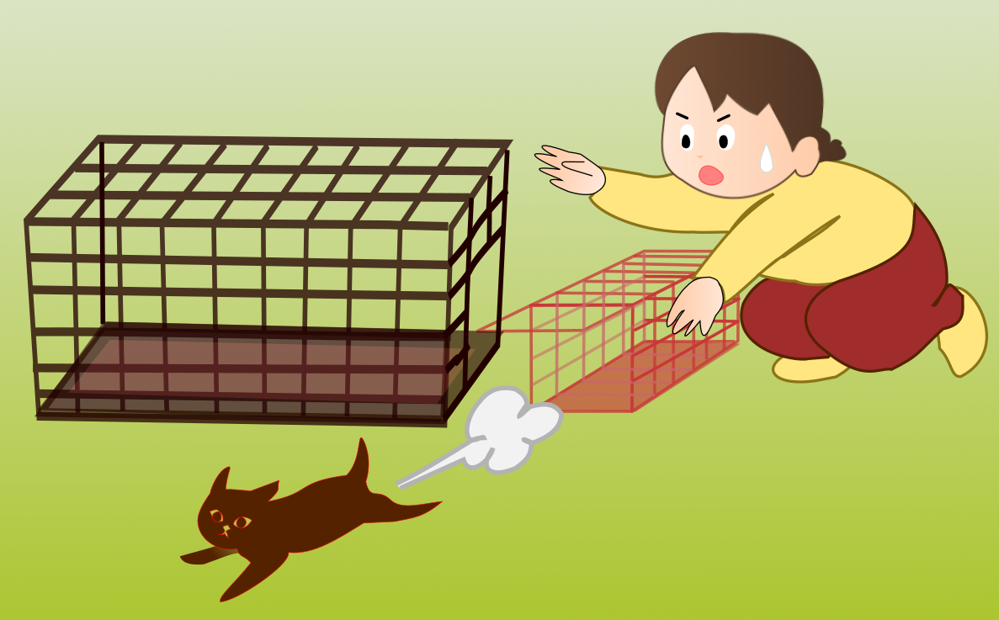
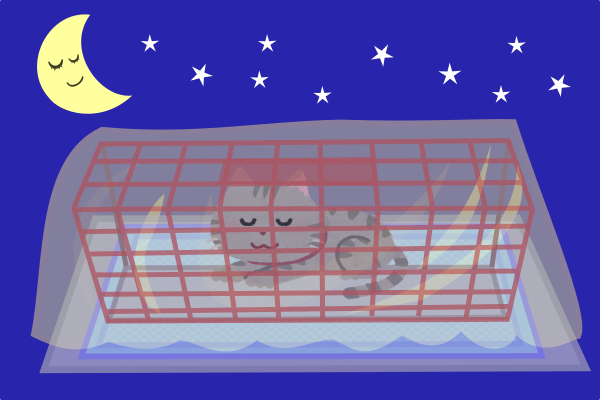

触れる猫でもない限り、最初に入っている入れ物から別のケージに無理に移し替えない方が無難です。脱走や怪我の元になります。
管理の難易度は猫が何に入っているかで違ってきます。
理想的なのは捕獲器：理由は給餌やおしっこの始末が簡単だからです。
・大人猫なら1晩くらい食事抜きでも大丈夫なので、無理はしなくて良いが、夏場の長期絶水は危険。
・子猫や痩せて栄養状態の悪い猫には宿泊中に食べさせてあげたいが、よく食べるからと言って与えすぎるとお腹を壊すので注意
・暑い時は涼しく、寒い時は防寒対策
・日なた放置は駄目
・車内放置は絶対ダメ…致命的
・1晩以上待機なら必ず水を飲めるように
・捕獲器を夜の間仕掛けておく際はその場に何時間も猫が晒される可能性があるので、予め被せ物敷物を。
・特に野晒し雨ざらし状態は凍えてしまう。
捕獲した猫の温度管理もよろしければ参照してみて下さい。
・できるだけ手術日に合わせて、前日または当日に捕獲する事。4日以上は長すぎる
・特に授乳中のメスだと残された子猫は耐えられない
・思いがけず捕まえてしまった場合はご連絡下さい。割増は掛かりますが対応出来る場合があります。休診日に注意！
・逃げ場のない罠内での外部からの視線は猫にとって大変な脅威
・まずは何らかの被せ物をする事
・布や生地もなければ段ボールや新聞紙でも良い。
・被せておくだけだと生地を引っ張り込んで、いつのまにか丸見え状態になっている事がある
・夏場は被せ物は程々に、涼しさ優先で。
・水や餌を与える際、食器は猫が逃げない程度の隙間から入れる
・容器の回収は無理にしなくてOK。一晩程度の待機ならリターンした後で十分
・おしっこは下に敷いているペットシーツを替えるだけなので難しくはない筈
・ウンチは棒でつついて落として良いが、猫が怖がるなら適当な所で妥協する事
・硬い便ならむしろあまり臭わないので、そのままでもあり
・下痢便は特に綺麗にするのは難しい。 洗い流そうとして水を使う人がいるが、猫が濡れて凍えてしまうので避ける事
・捕獲前に新聞紙を捕獲器内に敷いておくと猫がうんちごとグチャグチャに丸めてくれる。丸まった新聞紙をうまく回収できると汚れや臭いはだいぶマシになる。
・猫砂はメチャクチャに散らかしてかえって収集がつかなくなるので入れない方が良い
・ファブリース等で臭い消しして良いが、消臭スプレーは猫に直接噴霧しない事
・捕獲器に差し込む「くし」みたいな道具があると食器の出し入れやウンチの清掃が楽になる。 … 海外の製品は存在するが、通販サイトでは見かけないので手に入り辛いかもしれない。
一方で器用にする人も…
・当然だが、大き目のキャリーの方が良い
・小さすぎるとエサを入れる隙間も無いし、掃除も困難
・水を入れてもこぼしてビショビショになってしまう。水を置けないなら水分多めのウェットフードで代用する。
・おしっこで汚れてキャリーの底が濡れても猫が居る内は拭くことも出来ないので、予め使い捨ての雑巾タオル、新聞紙、ペットシーツなど入れておく。
・汚れた敷物の回収はキャリーの奥なら不可能。無理はしない事。手前なら回収できるが、回収の際の脱走に注意
・排泄物がうんちだった場合も基本は同様
・脱走は一瞬。キャリーを開ける際には締め切った部屋で行う事。他の部屋に逃げられると捕獲は困難。
